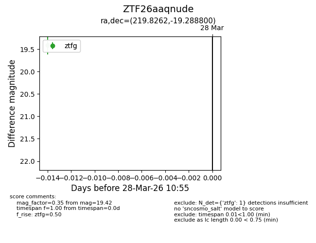
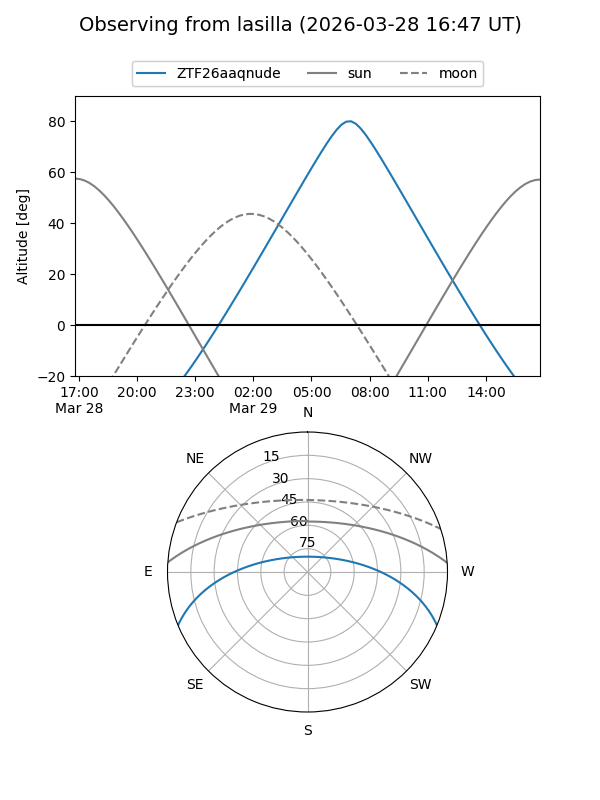
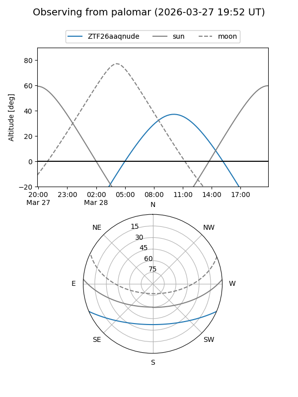

ZTF26aaqnude
Target ZTF26aaqnude at 2026-03-28 10:58
Aliases and brokers:
FINK: link
Lasair: link
ALeRCE: link
alt names
ZTF26aaqnude (ztf,fink_ztf)
Coordinates:
equatorial (ra, dec) = 219.8262,-19.28880
equatorial (HMS+DMS) = 14:39:18.29,-19:17:19.68
galactic (l, b) = (335.2119,+36.73162)
Flags:
Photometry:
last ztfg=19.42
1 ztfg detections
Lightcurve

Visibility


Additional plots